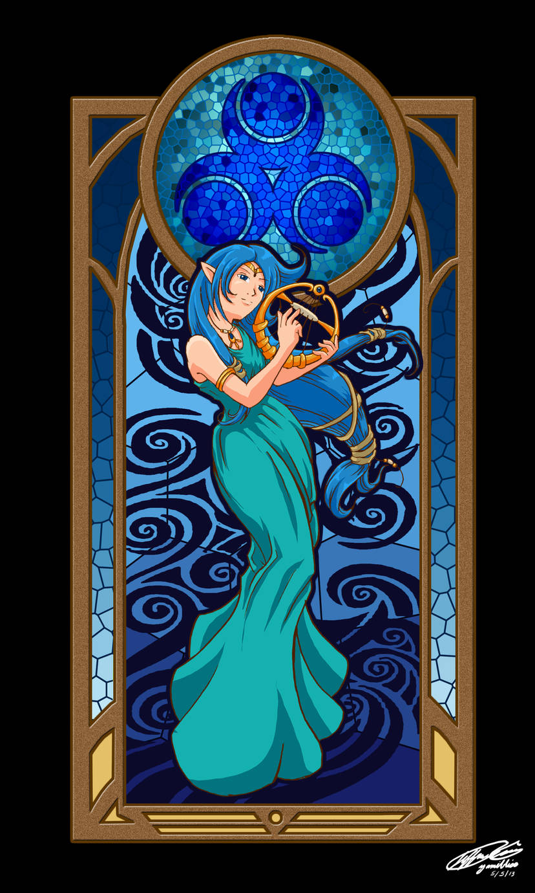
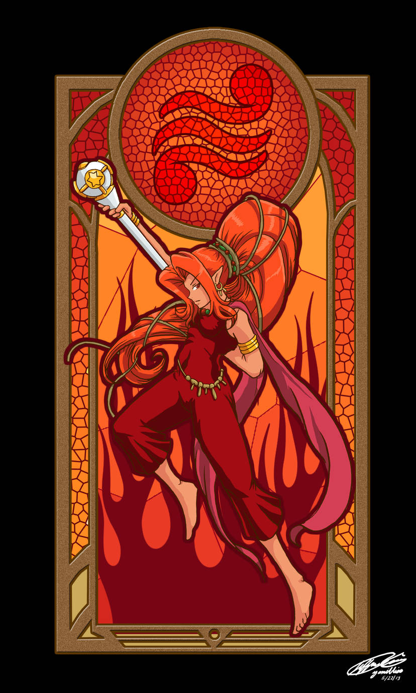
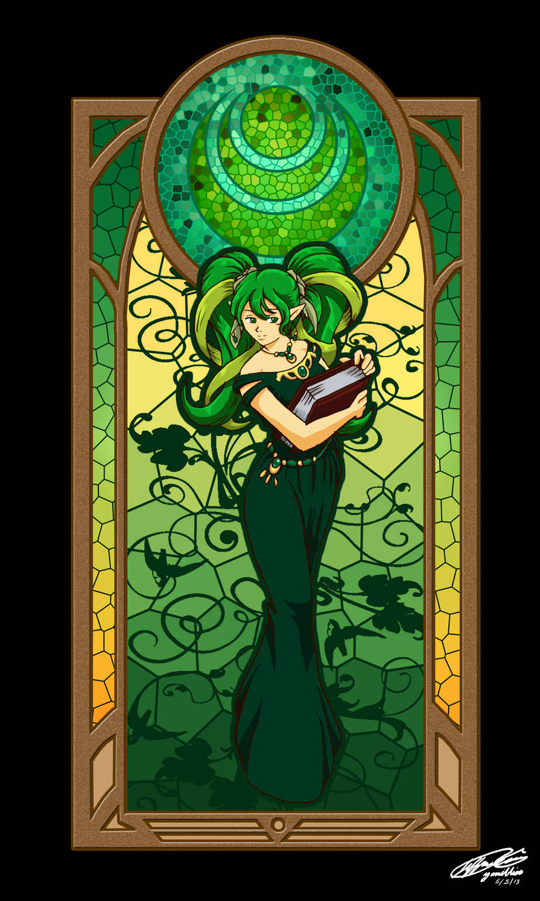

Sabedoria
Deusa Nayru
"Nayru derramou sua sabedoria na terra e deu o espírito da lei ao mundo"
Nayru é a fonte das leis fundamentais que regem o mundo.
Nayru, a Deusa da Sabedoria, é reverenciada por estabelecer as leis físicas e metafísicas da existência hiruliana, além de ser a criadora do próprio espaço-tempo.Ela é comumente associada ao elemento água e, portanto, é adorada como uma Deusa dos Mares e de outros grandes corpos d'água, como Lago Hylia. Por causa de sua participação na criação das leis do reino, Nayru é possivelmente também aquela adorada como a Deusa do Tempo, conforme referido em Majora's Mask. Através de sua associação com a água, símbolos e talismãs destinados a evocar Nayru são frequentemente coloridos de azul.

Poder
Deusa Din
"Din, com seus fortes braços flamejantes, cultivou a terra e criou a terra vermelha"
Como Deusa do Poder, Din está associada a temas que exemplificam o poder. Na maioria das vezes, ela é associada aos elementos fogo e terra. Esta divindade também está associada a montanhas e, mais especificamente, a vulcões como Montanha da Morte e Vulcão Eldin. Através de sua associação com fogo e terra, símbolos e talismãs destinados a evocar Din são frequentemente coloridos de vermelho.

Coragem
Deusa Farore
"Farore, com sua alma rica, produziu todas as formas de vida que defenderiam a lei"
Ela é a fonte de toda a vida que existe dentro do reino Hyruleano. Devido ao seu papel na criação de toda a vida, Farore está associada a regiões que florescem com vida, nomeadamente florestas, como a Lost Woods e o Faron Woods. Ela também é adorada como a Deusa dos Ventos, conforme mencionado em The Wind Waker, e sua essência é representada pelos ventos. Através da sua associação com a floresta, símbolos e talismãs destinados a evocar Farore são frequentemente coloridos de verde.